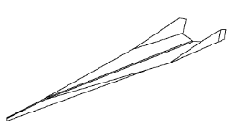
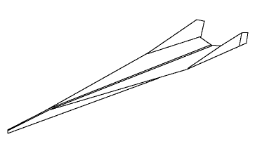

P-26 Peashooter
The P-26A was the first all-metal monoplane pursuit plane produced for the U.S. Army Air Corps, affectionately called the "Peashooter" by its pilots
The P-26 was also the last Army Air Corps pursuit aircraft accepted with an open cockpit, a fixed undercarriage, and an externally braced wing.
Armament: Two fixed .30-cal. machine guns or one .50-cal and one .30-cal machine gun.
Up to 200 lbs of bombs.
Engine: Pratt and Whitney R-1340-27 of 600 hp
Maximum speed: 234 mph/203 knots
Cruising speed: 199 mph/172 knots
Range: 360 statute miles/313 nautical miles
Service ceiling: 27,400 ft.
Span: 27 ft. 11.5 in.
Length: 23 ft. 10 in.
Height: 10 ft. 5 in.
Weight: 2,197 lbs. empty/2,955 lbs. (maximum)
Crew: One